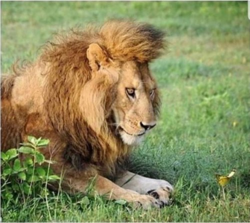

Disciple: Sir, I want to get liberated.
Ramana: You Are Ever Liberated.
Curtain opens. Scene begins.
Client: I have an intense curiosity in this enlightenment stuff.
Judy: Ok! What for? What do you think it’s going to do for you?
C: I think it involves relief, a safe haven from suffering. I yearn for understanding.
J: So “understanding” will help you to not suffer anymore?
C: Yes
J: Ever? So like if your child dies, no reaction?
C: Well…
J: Sounds like valium.
C: In a way I guess.
J: Why not just take valium? It’s quicker and more reliable.
C: I just want to know what people are talking about.
J: I get it, you’re missing out on something wonderful! So who are these people who are talking about this fabulous state you don’t have?
C: Well, you. And (another writer.)
J: Me? But I say repeatedly, in no uncertain terms, “This is it.” (The other writer) does also. We both use those exact words. How does This is it come to mean there’s some other It than this, some magical, happier It that you’re missing out on?
“This is it,” turns into, “Yeah I like what Judy says. Judy has a different, better It than I have. She can help me not suffer.” Is that correct?
C: Well,
J: Ok, so, do you think consciousness includes suffering? Or does consciousness include everything except that?
C- No, it’s all included.
J: And, is there anyone who doesn’t suffer sometimes?
C: No, everyone suffers.
J: OK, so there’s no evidence that not-suffering is even possible, and consciousness includes it all.
Yet you'd rather reject the experience that’s here already anyway, because it includes suffering, to yearn for an imagined not-here which excludes suffering.
Even though consciousness includes what you want to exclude.
Gosh, I can’t imagine why you haven’t found what you’re searching for.
End scene.
Whew.
It is astonishing how many conversations like this I have.
All over the world, within all kinds of so-called spiritual approaches…
People are trying to make consciousness small.
People are trying to squeeze consciousness down to something smaller than themselves, in order to contain and handle all that enormity.
By leaving out the suffering. By leaving out the anger, fear, pain, shame, guilt, resistance.
Thereby paring down incomprehensible inclusiveness to a more manageable size.
Somehow we’ve come to believe that we can dictate our preferred terms of experience, and thereby become larger than consciousness. We want to become the owner of consciousness.
“By my efforts and my preferences, I shall attain awareness. I shall know consciousness and harness it for my bliss.”
Ah.
As if we can rein it in. As if we have any leverage at all to make things to our liking.
When actually, It owns us.
Because we are in It.
We are of it. We are it.
Literally.
This It is us.
This color is us. This sound is us. This thought, this feeling- this sadness, fear, resistance, joy, bliss, calm…
Us, us, us.
It, It, It.
Nothing - not even suffering- can be left out without diminishing ourselves.
And diminishing is not possible.
Because It includes all.
Which means we include all.
And that
is as IT
as it gets.
Click here to get your every week.
“Nothing happens next. This is it.” --Zen saying
